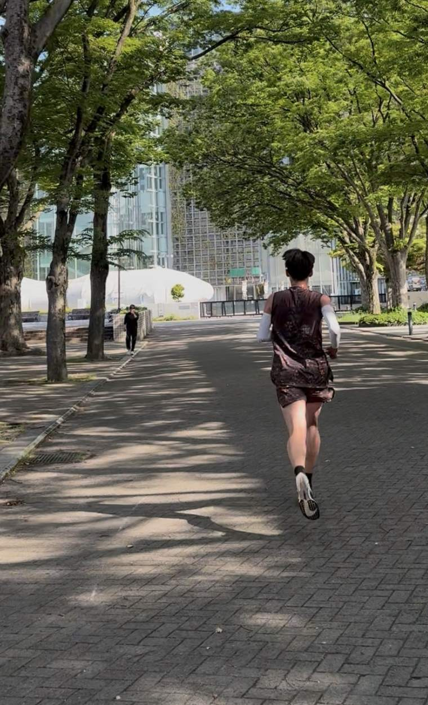
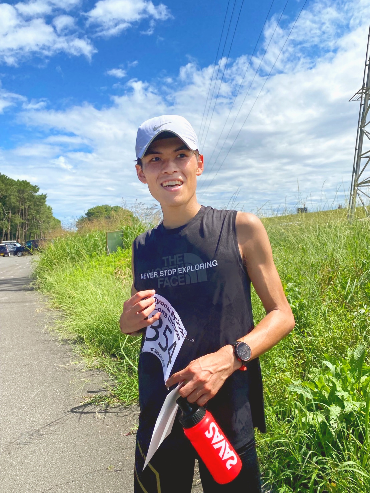
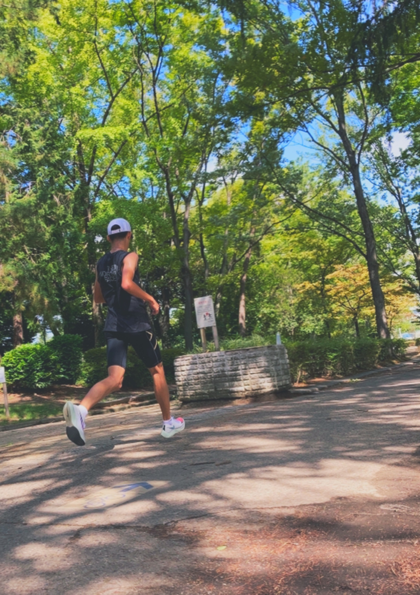

こんなお悩み
ありませんか？
痛みが気になって、思うように走れない
いろいろ試しているけれど、改善しきらない
休むと治るが、走るとまた同じところが痛くなる
痛みの不安を抱えたまま練習している
安心して走れる状態を取り戻したい
その悩み、付き合っていくものと諦めずに
まずは原因を知ることから始めてみませんか？
なぜ、痛みは繰り返されるのか
痛みや不調があると、一般的にはまず患部のケアを行います。
ストレッチやマッサージをしたり、筋トレで強化をしたり、しっかり身体を休め、治療を受けることもあるでしょう。
もちろん患部のケア・治療は大切です。
しかし、治ったと思って走り出すとまた痛めてしまう。そんな経験はありませんか？
この理由は、「痛みが出る原因そのものが変わっていない」からです。
痛みの原因は、痛いところにあるとは限りません。痛みが出ている場所に負担をかけ続けてしまっている「動き」こそが、痛みの本当の原因なのです。
着地のとき、膝の内側が痛い
【原因】足首まわりと股関節がうまく使えず、着地で膝が内側に逃げている。
着地のあと、地面を押すときに股関節が痛い
【原因】上半身がうまく使えていないぶん、股関節だけで地面を押す割合が大きくなっている。
着地のとき、アキレス腱が痛い
【原因】足首の歪みと腰まわりがうまく使えていないことで、アキレス腱にかかる負担が大きくなっている。
ここを変えない限り、同じ痛みは繰り返されます。
同じ膝痛でも、負担がかかっている理由や身体の使い方は人によって違うのです。
だからこそ、なぜ痛みが出るのか、その根本の原因を知ることから始めることが大切なのです。
フォーム分析で痛みの原因を知る
ランニング動画を撮影いただき、痛みの原因をフォーム・動きから分析します。
なぜ痛みが起きているのか
送っていただいた動画から、なぜその部分に痛みが出るのか、その部分に負荷が集中している原因は何かを分析します。
なぜこれまでのケアでは
変わらなかったのか
ストレッチ、マッサージ、筋トレ、休養。続けても変わらなかったのは、努力が足りなかったからではありません。これまで取り組んできたことをうかがったうえで、なぜそれでは変わらなかったのかをお伝えします。
どんな動きができるように
なればいいのか
痛みの原因になっている動きに対して、これから何ができるようになることが大切かをお伝えします。
無料フォーム分析
お申込み後に撮影方法をご案内します。
動画を頂いてから1週間ほどでフィードバックをします。
分析の流れ
LINEで申し込む
LINE追加後、トーク画面から「分析」と送信ください。
動画を撮って送る
撮影方法はLINEでご案内します。スマートフォンで撮影いただけます。
オンラインでフィードバック
動画をいただいてから1週間ほどを目安に、Zoomを使ってフィードバックをさせていただきます。

中学時代、東海総体・全国大会を目指して練習を重ねていた2年の冬、腰椎分離症を発症。3年生最後の夏の大会を走れずに終わった経験が、今のサポートの原点です。
その後、大学生になってフルマラソンを始め、ランニング仲間と走る時間の中で、「走れることの幸せ」を改めて感じました。
怪我で走れない悔しさと、仲間と走れる喜び。この二つの経験が重なり、怪我なく走り続けられること、記録に挑戦し続けられることをサポートしていけるトレーナーになりたいと思うようになりました。
よくある質問
Q. 本当に無料ですか？
はい、分析もフィードバックも無料です。現在、月10名まででお受けしています。自分の痛みの原因が分からないまま諦めてしまうランナーが多いと感じていて、まずは原因を知ってほしいと考えているためです。
Q. 分析のあと、必ず何か申し込む必要がありますか？
ありません。フィードバックの内容にご納得いただけた場合のみ、その先のサポートをご案内しています。
Q. 痛みが強くて走れない状態でも受けられますか？
痛みが強く、まずは走れる状態を目指したいという方は、LINEでご相談ください。いまの状態をうかがって、必要なことをご案内します。
Q. 撮影は一人でもできますか？
できます。カメラを固定しての撮影方法もご案内しています。可能であれば、どなたかに撮影していただくとより正確に分析できます。
Q. オンラインのフィードバックは何を使いますか？
Zoomを使用します。動画を画面共有しながらお伝えするため、パソコンまたはタブレットでのご参加をおすすめします。

痛みを繰り返すことなく、
安心して走れる状態へ。
いまの痛みがなぜ起きているのか。まずは原因を知ることから始めませんか。
友だち追加後、トークで「分析」と送ってください。